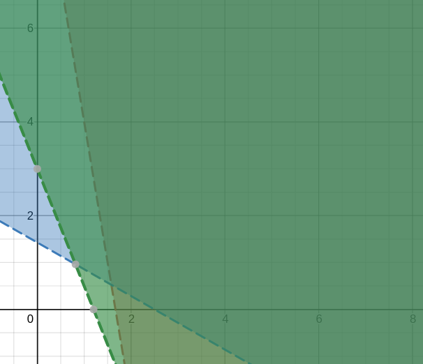
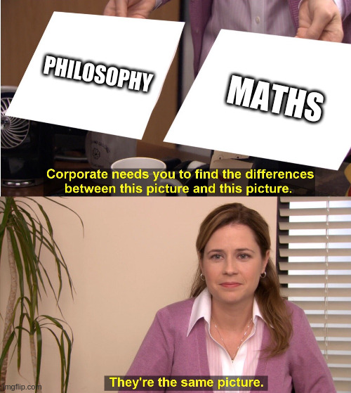

Today we are going to attempt to automatically solve a sudoku using a computer program. I've never met anyone that doesn't know what a sudoku is, but for completeness sake: a sudoku is a puzzle that takes place on a 9x9 grid where every cell has to be given a number between 1 and 9 such that no row, column, or any of the 9 3x3 subsquares, contain duplicates. A sudoku that still has to be solved has a few digits already pre filled. Hardest sudokus have very few slots pre filled; Sometimes even requiring you to guess what number goes in a slot, which might lead to conflicts later requiring you to backtrack.
Obviously we want to be able to complete this task of solving a sudoku rather quickly; sub second sounds like a reasonable, yet challenging goal. Let's specify the input for our program. To make it also human readable let's divide the input over 9 lines, each containing the 9 digits of that row. For slots that have no value yet we simply enter use a 0. For example:
003020600Arguably the closest thing that algorithm designers have to a cheat code, is the insane versatility and speed that Integer Linear Programming (ILP) can bring to the table. Many hard problems can be modelled as an ILP and solved rather efficiently. Even problems that are known to be unsolvable in polynomial time* - like the travelling salesmen - can often scale fairly well as an ILP model before the theory catches up. Obviously this does mean, that an ILP solver cannot run in polynomial time either. But, considering a sudoku is always of the same size, you could say that our program runs in \( O(1) \) time complexity :)
*Assuming P ≠ NP, but that is a rabbit hole for another time
The general process of creating an ILP model is to define a number of variables, the maximization or minimization of some expression, and a set of bounding constraints. Let's conjure up a very simple example.
During the pandemic we have all learned how important it is to have a good work life balance. As a hedonist, I want to have as much fun as possible. On the other hand, the Jordan Peterson in me says that I need to be responsible. How can I satisfy these two conflicting interests? Let's first try to quantify our scenario in a little table.
| Activity | Social | Work | Rest | Effort |
|---|---|---|---|---|
| Lunch meeting | 30 | 40 | 25 | 60 |
| Working in the library | 5 | 70 | 10 | 20 |
We want to spend a certain amount of time on each of the activities. Let's say we spend \(x\) hours on lunch meetings, and \(y\) hours on working in the library. If we want the combination that gives us the least total effort - which is obviously our goal - then we can simply spend 0 hours doing both. However, the official unofficial guide of being responsible says that we have gain at least 50 'social points' everyday, 100 working, and 30 resting. In other words, we have to consider the following constraints:
\[ x * 30 + y * 5 \geq 50 \\ x * 40 + y * 70 \geq 100 \\ x * 25 + y * 10 \geq 30 \\ \]We want these constraints to hold whilst also minimizing the effort expressed by \(x * 60 + y * 20\).
Violating any of the constraints is no option. As a result, we can run into situation in which there is no solution because two constraints cannot both be satisfied at once. In this example that is not true however. We can plot the space of feasible solutions quite easily since we are only dealing with two variables at the moment.
As you can see, all 3 constraints divide the plane up in two. The side that is filled satisfies that constraint. To satisfy all constraints, we have to take the intersection of these 3 filled subplains. Within that space we are free to find our minimization.
The algorithms that can solve these systems, such as simplex, are outside the scope of this post. Frankly, I wouldn't be able to do them justice as I have a hard time understanding them myself. However, a free python package already exists that does the hard work for us: python-mip (pip3 install python-mip). It allows us to simply create the variables, add the constraints, specify the object, and finally run the solver.
{% call macros.code("python3") %} from mip import Model, minimize # create the model m = Model("Balanced Life") # declare two variables as part of the model # the default is a continuous fractional, but we can also # create exclusively whole number variables (integers) or binary ones (x, y) = (m.add_var(), m.add_var()) # x and y must be natural numbers (we can't spend negative hours on something) m += x >= 0 m += y >= 0 # social, work, and rest constraints must be met m += x*30 + y*5 >= 50 m += x*40 + y*70 >= 100 m += x*25 + y*10 >= 30 # objective is to minimize total effort m.objective = minimize(x*60 + y*20) # solve the model m.optimize() # print the solution print(f"Optimal solution: x = {x.x}, y={y.x}") # Optimal solution: x = 1.5789473684210524, y=0.5263157894736844 {% endcall %}And so we find that the optimal solution is to spend about 1.57 hours in a lunch meeting, but also 0.52 hours in the library.
Although I hope that the previous example was able to shed some light on what kind of system we can solve, I can understand that it is not immediately obvious how we can model a sudoku in such a system. After all, a sudoku seems like it's exclusively a set of uniqueness constraints; We don't really care if a field has a value larger than something. We could say that we want a column, row or 3x3 (let's call them units) to sum up to exactly 45. Using two inequality constraints we can easily model equality: \( x \leq y \wedge x \geq y \implies x = y \). However, these constraints are not strict enough; Not any sequence of 9 elements that sum up to 45 will do. What we want to do is: \[ \text{let sudoku :: [int]} \\ \text{let units :: [[index]]} \\ \forall u \in \text{units} : \forall i, j \in u : s[i] \neq s[j] \] Since \(\neq\) is obviously commutative, we can be a bit more conservative and prevent that we add the constraint twice. This will also help keep the code a bit faster since the running time of an ILP depends heavily on the number of constraints. \[ \text{let sudoku :: [int]} \\ \text{let units :: [[index]]} \\ \forall u \in \text{units} : \forall i, j \in u : i < j \implies s[i] \neq s[j] \]
We need to find a way to model \( \neq \) with just \( \leq \) and \( \geq \). The first insight we need is that \(x > y \implies x \geq y + 1 \). This fact allows us to model strict inequalities. We then could say if x and y are not equal, x must be either strictly smaller or strictly larger: \(x \neq y \implies x \leq y - 1 \vee x \geq y + 1 \).
Seemingly, we are still stuck; ILP's do not support disjunction. However, upon closer inspection we can be even more precise. Namely, the left and right side imply each other's negation (if \(x < y\) then we know that \(x > y\) is false). Thus, the only way that the whole expression can hold is if only 1 of the two sub expressions hold. We can therefore use a XOR operator instead:
\[ x \leq y - 1 \oplus x \geq y + 1 \]This is good news because a XOR might be something we can model in an ILP using binary variables. Namely, we can use an auxiliary binary variable to choose between one of the two options. This variable needs to ensure that based on whether it is 1 or 0, the corresponding expression becomes trivially true.
One way to do this in our case is to capitalize on the fact that values are always in the range \([0,9]\). That way know that if we add 10 to the right side of an expression, that the left - assuming it is an atomic variable - is always smaller. Similarly, in the second expression we can subtract 10 when the negation of the binary variable is true.
\[ \text{let } b \in [0,1] \\ x \leq y - 1 + 10 * b \wedge x \geq y + 1 - 10 * (1-b) \]We now have an expression that is satisfiable if and only if \(x \neq y \). The conjunction is simply handled by adding two constraints. Let's already build a simple helper function that we can use later.
{% call macros.code("python") %} # Add a x != y constraint to model m def add_unequality(m, x, y): bvar = m.add_var(var_type=BINARY) m += x <= y - 1 + 10 * bvar m += x >= y + 1 - 10 * (1-bvar) {% endcall %}Let's start with building our main program. We need to import some things from mip as well as itertools. itertools is just a collection of helper functions that will prove helpful later. It does not require additional packages.
We'll just hardcode the sudoku for ease of use. Finally we can also create a secondary list that contains a variable corresponding to each digit in the sudoku. This is the list that we will mostly we working with.
{% call macros.code("python") %} from mip import Model, INTEGER, maximize, BINARY import itertools sudoku = [ 0,0,3,0,2,0,6,0,0, 9,0,0,3,0,5,0,0,1, 0,0,1,8,0,6,4,0,0, 0,0,8,1,0,2,9,0,0, 7,0,0,0,0,0,0,0,8, 0,0,6,7,0,8,2,0,0, 0,0,2,6,0,9,5,0,0, 8,0,0,2,0,3,0,0,9, 0,0,5,0,1,0,3,0,0] m = Model("Sudoku") # create an integer variable in range [0,9] for each field in the sudoku allvars = [m.add_var(var_type=INTEGER, lb = 1, ub = 9) for _ in sudoku] {% endcall %} We can already add equality constraints for the numbers that are fixed in our input. After all, their values are already known so we should constrain them to a constant value. Remember how easy it was to implement equality using two inequalities? That is probably the reason that mip supports them natively. {% call macros.code("python") %} for (i, var) in zip(sudoku, allvars): if i != 0: m += var == i {% endcall %} Before continuing adding all the unequality constraints, let's add a few helper functions that will collect all 9 variables in a row, column, or cell. The 3x3 cell is the most tedious; We can calculate the top left coordinate and then loop over the 3x3 from that point. The row and column are relatively easily implemented using a splice and list comprehension. {% call macros.code("python") %} def get_cell_ids(cell_id): xs = (cell_id % 3)*3 ys = (cell_id // 3)*3 for dx in range(3): for dy in range(3): yield (xs+dx) + 9 * (ys+dy) def get_cell(cell_id): return [allvars[i] for i in get_cell_ids(cell_id)] def get_row(row_id): start = row_id*9 return allvars[start:start+9] def get_column(column_id): return [allvars[y*9+column_id] for y in range(9)] {% endcall %} Now we can call upon itertools.combinations to give us all the unique, unordered pairs of variables in a unit. We can visualize what it does in this table:| j\i | 0 | 1 | 2 | 3 | 4 |
| 0 | |||||
| 1 | |||||
| 2 | |||||
| 3 | |||||
| 4 |
In other words: \( \forall i, j \in \text{combinations}(\text{range}(5), 2)) \implies i < j \). This is exactly what we wanted because we already discussed how \(x \neq y \implies y \neq x\) so there is not need to add the constraint twice
Hopefully I haven't confused you too much. But I think it will be worth while considering how elegantly we can implemented the final constraints for all 9 rows, columns, and 3x3s.
{% call macros.code("python") %} for i in range(9): [add_unequality(m, x, y) for (x,y) in itertools.combinations(get_column(i), 2)] [add_unequality(m, x, y) for (x,y) in itertools.combinations(get_row(i), 2)] [add_unequality(m, x, y) for (x,y) in itertools.combinations(get_cell(i), 2)] {% endcall %}That's all the constraints we need to complete a sudoku. There is still one still missing in the ILP model however and that is our objective. What is our objective? Well to satisfy all the constraints, but other than that we don't really care. Mmm, we really need to specify a goal? Let's just do something arbitrary, like maximizing the value in the upper left corner.
Lastly, we call optimize with a max timeout of 10 seconds. Unfortunately, when the sudoku is particularly ambiguous (lots of zeroes), the solver can take quite long, so we'll make sure that it doesn't hang. Luckily, for most normal cases it solves very quickly. If it has found a solution, we can print it to screen by accessing the values of the variables, which should now be set.
{% call macros.code("python") %} # arbitrary m.objective = maximize(allvars[0]) print(m.optimize(max_seconds=10)) if m.num_solutions: for y in range(9): for x in range(9): print(f"{int(allvars[y*9+x].x)},", end="") print() {% endcall %} If we run the program, we get our solved sudoku back in a blazingly fast 0.1 seconds! {% call macros.code("text") %} $ python3 sudoku.py ... Total time (CPU seconds): 0.10 (Wallclock seconds): 0.10 OptimizationStatus.OPTIMAL 4,8,3,9,2,1,6,5,7, 9,6,7,3,4,5,8,2,1, 2,5,1,8,7,6,4,9,3, 5,4,8,1,3,2,9,7,6, 7,2,9,5,6,4,1,3,8, 1,3,6,7,9,8,2,4,5, 3,7,2,6,8,9,5,1,4, 8,1,4,2,5,3,7,6,9, 6,9,5,4,1,7,3,8,2, {% endcall %} Of course we could add some nice input handling so that we can provide any sudoku in a range of different formats, but I will leave that up to you.Let me know if you have been able to improve on the project in any way! Also just let me know if you enjoyed reading this.
If you need some more unsolved sudokus to play with, check out this list: https://github.com/dimitri/sudoku/blob/master/sudoku.txt
{% endblock %}